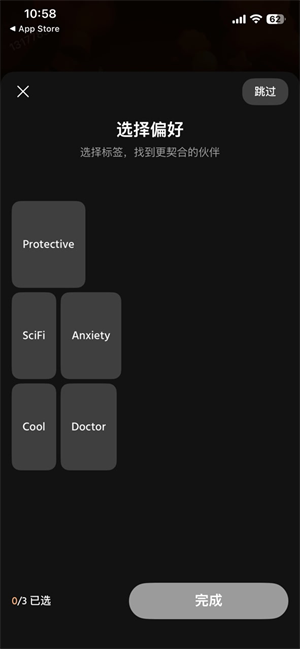
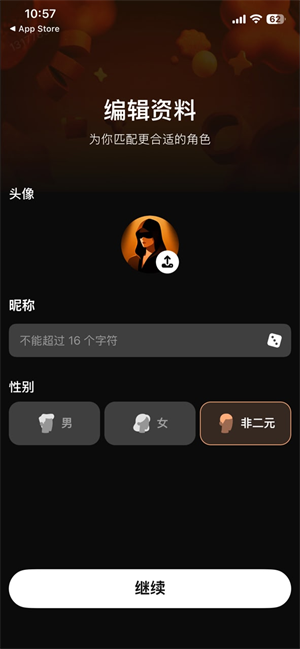

🌧
沉浸式场景
雨夜的温馨、星空下的浪漫、深夜的长谈——场景随剧情切换，对话有画面感，而不是干巴巴的问答。
它是什么
Hubby 是一款面向女生的 AI 陪伴聊天应用。进去先挑一个顺眼的角色——成熟、温柔、霸道、小狗型、占有欲、异域风情，这些风格标签直接决定列表怎么排；点开封面就能开聊，对方会照着各自的人设回应你，而不是一套话术走天下。
聊出感觉了，故事才刚开始：送虚拟礼物把亲密值堆上去，解锁限定剧情和专属台词；建立专属 CP 关系线；打开每日提醒，让它固定时间主动来问候。职业、小习惯这类设定会长期生效，它越聊越像"认识你很久的那个人"。
界面先过一眼


它擅长的事
雨夜的温馨、星空下的浪漫、深夜的长谈——场景随剧情切换，对话有画面感，而不是干巴巴的问答。
输入框直接打字是默认方式；想听声音就切进语音模式再开口，同一界面来回换，麦克风权限记得给。
外形、性格、名字、年龄自己定，职业与小习惯这类设定长期生效——照着你的理想型来，比反复解释管用。
聊天界面里赠送虚拟礼品，亲密值一级级往上走，限定剧情、专属台词和特色玩法随之解锁。
建立只属于你俩的情侣配对关系线，关系越久它越贴合你的性格，还会主动发来每日关心。
打开个性化记忆，它会记住你的偏好与聊过的重要内容；设置里另有经期追踪，特殊时期给出更细的关怀话术。
上手路线
首屏二选一：邮箱登录适合打算长期聊、在意记录的；游客模式不填任何账号，几秒进主界面——但卸载重装没有账号兜底。
姓名与性别偏好、喜欢的男友风格标签，这两处决定先给你推哪类角色；选错了后面都能改。
用风格标签把列表收窄，点封面进聊天界面；同时跟多个角色聊也没问题，每条会话各自独立。
先文字后语音随意。想让它更懂你，把关键信息写进角色设定、打开个性化记忆，比在对话里反复解释有效。
答疑
不能。对话在云端生成，首次启动和每次聊天都需要网络；回复变慢多半是网络抖动，切个网试试。
可以，游客模式不注册就能进主界面挑角色、开聊。代价是没有账号兜底——卸载重装后聊天记录还在不在，公开资料没写，想长期聊还是邮箱登录更稳妥。
基础对话不收费就能开始；应用内有可选的自动续订订阅负责高级功能。iOS 侧曾标注 PRO 周订阅与月订阅两档，安卓侧的实际档位与金额以应用内支付页当时显示为准。
隐私政策写明面向 18 岁及以上用户，不建议未成年人使用。聊天内容属于"你生成的内容"，会在政策列明的范围内被收集与处理，敏感话题自己先掂量。
认包名：com.hubby.chatjokl 才是它。Husby、KindHubby 这几个近名应用与它混在同一个搜索结果里，分辨方法写在下载页的同名辨析里。